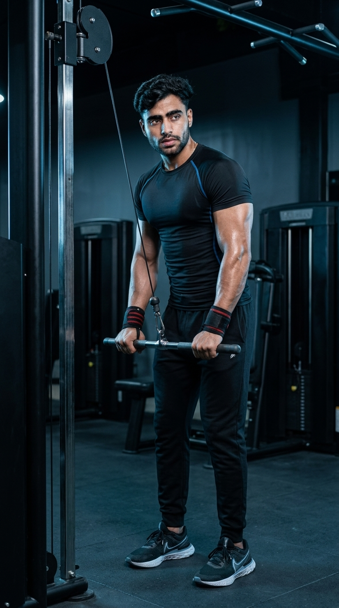

Primary Muscle
Triceps Brachii
Build Bigger Triceps, Improve Arm Strength & Master Perfect Cable Pushdown Technique
The Cable Triceps Pushdown is one of the most effective isolation exercises for developing stronger, more defined triceps. Using a cable machine provides constant tension throughout the movement, helping target all three heads of the triceps while improving elbow stability, lockout strength, and overall upper-arm muscle development. It is an excellent exercise for beginners and advanced lifters alike seeking greater arm size and pressing performance.

Triceps Brachii
Cable Machine
Beginner
Isolation
Discover which muscles are primarily responsible for the Cable Triceps Pushdown and how the supporting muscles work together to stabilize the elbows, shoulders, and wrists throughout every repetition.
Long, Lateral & Medial Heads
Elbow Stabilizer
Grip & Wrist Stability
Shoulder Stabilizer
Discover how the Cable Triceps Pushdown helps build stronger, more defined triceps, improves pressing performance, enhances elbow stability, and provides constant muscle tension for effective upper-arm development.
Effectively targets all three heads of the triceps, helping increase upper-arm size, muscle definition, and overall arm development through controlled elbow extension.
Strengthening the triceps enhances lockout power during compound pressing exercises such as the bench press, overhead press, and push-ups, contributing to greater upper-body strength.
Unlike many free-weight movements, the cable machine keeps continuous resistance on the triceps throughout the entire range of motion, promoting better muscle activation and hypertrophy.
Performing controlled repetitions strengthens the muscles surrounding the elbow joint, helping improve joint stability and movement control during upper-body training.
The guided cable path makes this exercise easy to learn, allowing beginners to develop proper triceps activation while minimizing unnecessary body movement and momentum.
Adjustable weight stacks allow gradual increases in resistance, making it simple to apply progressive overload for continued improvements in triceps strength, muscle growth, and training performance.
Follow these step-by-step instructions to perform the Cable Triceps Pushdown with proper posture, controlled elbow movement, and full triceps activation for maximum muscle growth and strength.
Attach a straight bar to the high pulley of a cable machine and select a weight that allows you to perform each repetition with strict form and full control.
Start with a lighter weight until you can keep your elbows fixed at your sides throughout the entire movement.
Hold the bar with an overhand grip about shoulder-width apart. Stand upright with your feet shoulder-width apart, elbows tucked close to your torso, shoulders relaxed, and core engaged.
Keep your chest lifted and avoid allowing your elbows to drift forward before starting the movement.
Extend your elbows and press the bar downward until your arms are fully straight. Focus on squeezing your triceps at the bottom while keeping your upper arms stationary.
Imagine driving your hands toward the floor rather than swinging the weight with your shoulders.
Hold the fully extended position briefly and contract your triceps as hard as possible before beginning the return phase.
A one-second squeeze at the bottom can improve mind-muscle connection and increase triceps activation.
Slowly allow the bar to return to the starting position until your forearms are approximately parallel to the floor. Maintain control throughout the movement without letting the weight stack slam together.
Control the lowering phase just as carefully as the pushdown. Avoid using momentum, leaning excessively, or allowing your elbows to flare away from your body.
Avoid these common technique mistakes to maximize triceps activation, maintain proper form, and perform the Cable Triceps Pushdown safely and effectively.
Choosing more weight than you can control often causes poor technique, reduced range of motion, and excessive body movement, making the exercise less effective for targeting the triceps.
Select a weight that allows you to keep your elbows fixed, move through a full range of motion, and perform every repetition with complete control.
Allowing the elbows to move away from your sides shifts tension away from the triceps and reduces the isolation benefits of the exercise.
Keep your elbows close to your torso throughout the entire movement and allow only your forearms to move during each repetition.
Leaning your body, swinging the weight, or using your shoulders to push the bar down reduces triceps activation and makes the movement less effective.
Keep your torso stable, brace your core, and press the bar down using only elbow extension without swinging or rocking your body.
Allowing the weight stack to pull the bar back quickly reduces time under tension and can cause you to lose control of the movement.
Slowly return the bar to the starting position while maintaining tension in your triceps and preventing the weight stack from slamming together.
Apply these expert coaching cues to improve your Cable Triceps Pushdown technique, maximize triceps activation, maintain proper body position, and get more out of every repetition.
Your upper arms should remain close to your torso throughout the movement. Only your forearms should move as you extend your elbows.
Think of your elbows as hinges. If they drift forward or outward, you'll shift tension away from your triceps.
Fully straighten your arms at the bottom of each repetition and contract your triceps before slowly returning to the starting position.
Hold the contraction for about one second to improve your mind-muscle connection and increase overall muscle activation.
Slowly allow the bar to return to the starting position instead of letting the weight stack pull your arms upward too quickly.
The lowering phase is just as important as the pushdown. Controlled repetitions create more muscle tension and better training results.
Progressively increase the resistance only when you can complete every repetition with proper technique, a full range of motion, and complete control.
Better technique produces greater triceps development than lifting heavier weights with poor form or excessive body momentum.
Progress from learning the Cable Triceps Pushdown with a light weight to performing heavier, more challenging sets while maintaining strict technique, consistent elbow positioning, full range of motion, and maximum triceps activation.
Begin with a light weight to master your stance, grip, elbow position, posture, and full range of motion before increasing the resistance.
Stable posture, elbows tucked at your sides, controlled movement, and complete triceps contraction on every repetition.
Perform every repetition with a smooth pushdown, a brief squeeze at full extension, and a slow, controlled return while maintaining constant cable tension.
Fixed elbows, controlled tempo, full range of motion, continuous muscle tension, and proper breathing throughout each set.
Once your technique remains consistent across all repetitions, gradually increase the weight while maintaining strict form, elbow position, and full triceps contraction.
Progressive overload, strict execution, complete control, and maintaining full range of motion without using body momentum.
After mastering the standard Cable Triceps Pushdown, experiment with different attachments such as a rope, V-bar, or single handle, as well as paused repetitions and tempo variations to continue challenging your triceps.
Exercise variation, progressive overload, controlled tempo, advanced training techniques, and selecting the attachment that best matches your training goals.
Find answers to common questions about Cable Triceps Pushdown technique, muscles worked, proper form, grip position, training frequency, and progression to maximize your triceps development.
The Cable Triceps Pushdown primarily targets all three heads of the triceps brachii—the long head, lateral head, and medial head. The forearm muscles assist with grip, while the shoulders and core stabilize your body throughout the exercise.
Yes. Keeping your elbows close to your sides helps isolate the triceps and prevents your shoulders from taking over the movement. Only your forearms should move while your upper arms remain stationary.
A straight bar is commonly used for the standard Cable Triceps Pushdown, but rope, V-bar, and single-handle attachments are also effective. Each attachment changes hand position slightly while still targeting the triceps. Choose the one that feels comfortable and supports your training goals.
Yes. The Cable Triceps Pushdown is one of the best isolation exercises for beginners because the cable machine provides a controlled movement path and allows you to adjust the resistance easily while learning proper technique.
For muscle growth, a common recommendation is 2–4 working sets of 8–15 repetitions using a weight that allows you to maintain strict form and complete control throughout every repetition. Adjust your training volume according to your experience, recovery, and overall workout program.
Yes. Since the triceps make up a large portion of your upper-arm muscle mass, regularly performing Cable Triceps Pushdowns with progressive overload, proper nutrition, and adequate recovery can contribute significantly to stronger and more muscular arms.
Explore other triceps exercises that complement the Cable Triceps Pushdown and help you build stronger, bigger arms through different movement patterns, equipment, and training variations.
Continue building stronger, bigger triceps with step-by-step exercise guides covering proper technique, muscles worked, common mistakes, expert coaching tips, and progression strategies for every fitness level.